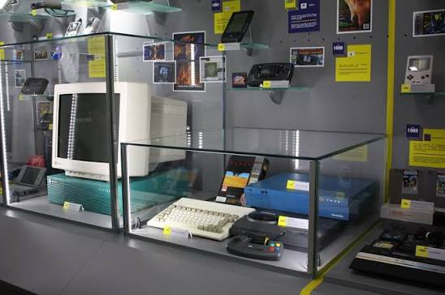
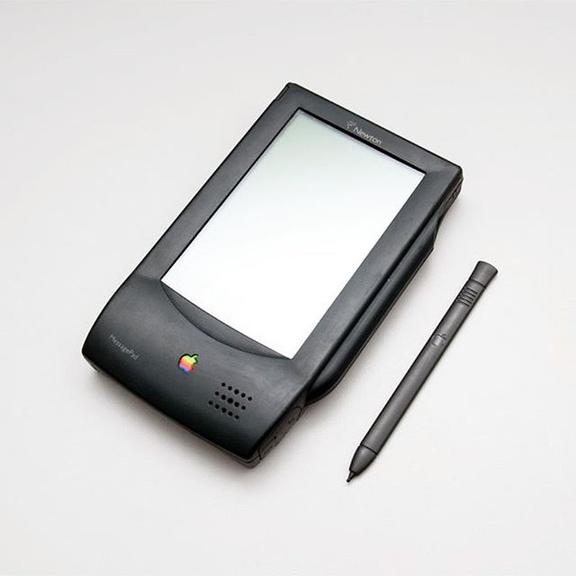
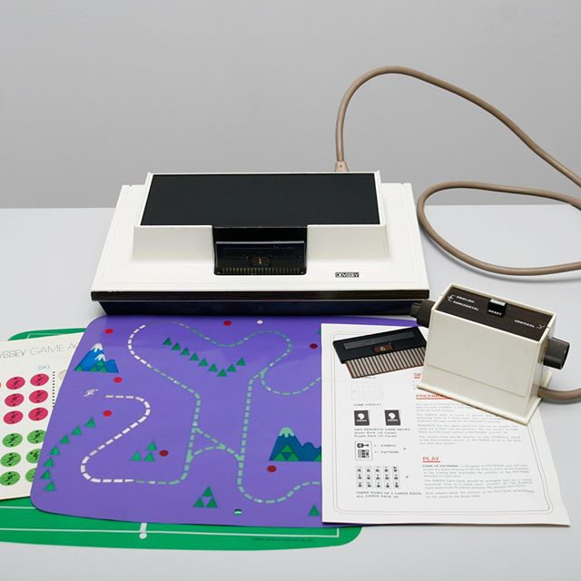
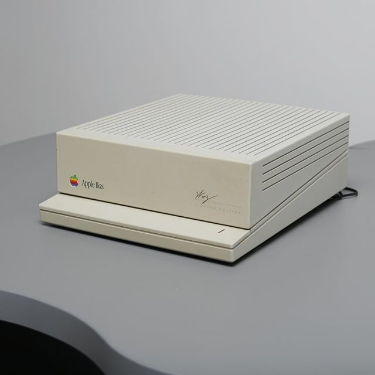
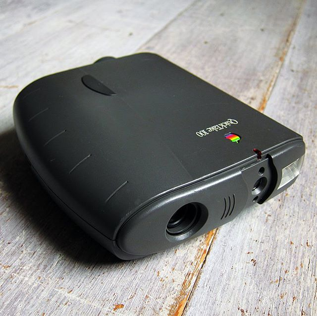
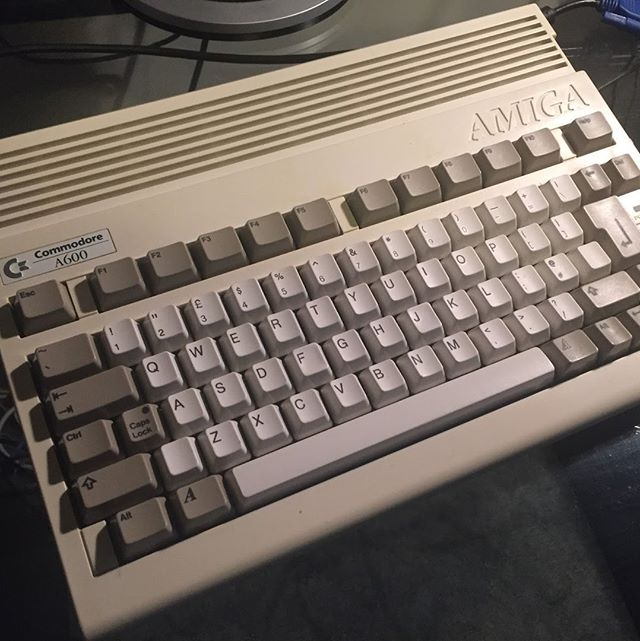

AI at Work: Real Tasks and How to Solve Them
An advanced course on working with Claude for those who already have basic experience with AI.
- Format
- in person and online
- Duration
- about 2–3 months
- Classes
- 90 minutes
- Price
- free

Come and see vintage computers and game consoles, and sign up for our free courses and tours!
Three free courses. Each class lasts 90 minutes. Sign up by phone: +380 67 539 4095.
More about the courses and a comparisonAn advanced course on working with Claude for those who already have basic experience with AI.
An AI course for teenagers.
Kids create their own games, no prior experience needed.
Visitors explore the museum’s exhibits. The day and time are arranged when you sign up.

A few devices from the museum’s collection.

Apple · 1993
A personal digital assistant running Newton OS with a touchscreen, long before the word “tablet” existed.

Magnavox · 1972
The first game console that could be connected to a TV.

Apple · 1986
A model from the Apple II line, the company’s first mass-produced computer.

Apple with Kodak · 1994
One of the first digital cameras.

Commodore · 1992
A full-fledged computer built into a keyboard case.

Nintendo · 1983
The original console behind Dendy, the clone that was widely known in Ukraine.
The Software and Computer Museum was founded in Kharkiv in August 2017 by Anton Trubnikov, Serhii Tsymbal and Oleksandr Kovalenko. The founders believe it was software that drove the development of hardware, and they personally collected and restored rare computers, game consoles and even robots.
Devices from different eras stand side by side here, so you can see how technology changed from the earliest models to modern ones.
I came with my class on a school trip. The kids loved the Apple II and the game consoles. We’ll definitely be back.
A wonderful museum for the whole family. The guide tells the story in a way that’s interesting for adults and children alike.
I never thought the history of computers could be so fascinating. Thank you for the free admission!
The Software and Computer Museum is open Tuesday to Saturday, 10:00–18:00. Come and see computers, game consoles and other devices from different eras, from the earliest models to modern ones.
79/1 Hryhoriia Skovorody St, Kharkiv. Yaroslava Mudroho metro station.
Tuesday–Saturday, 10:00–18:00.